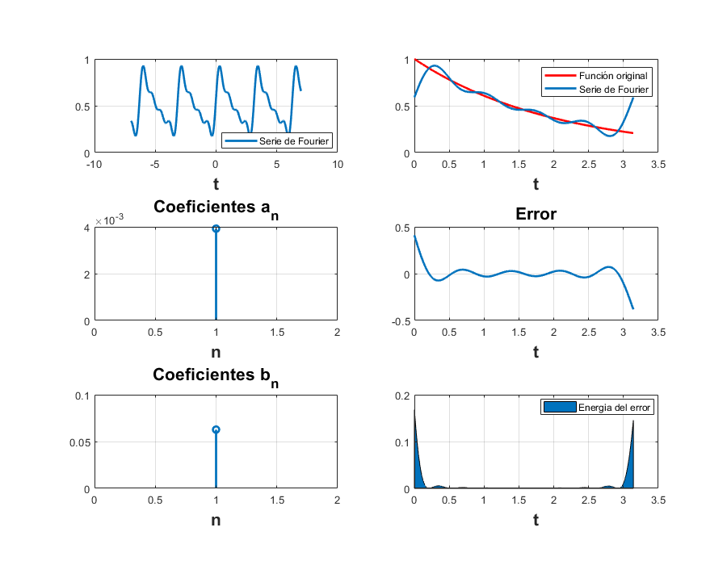
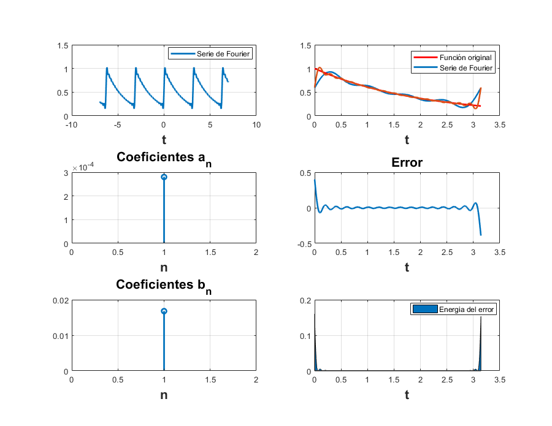
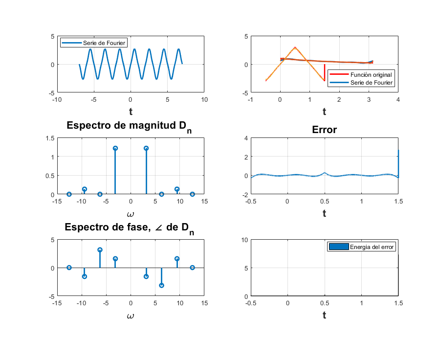
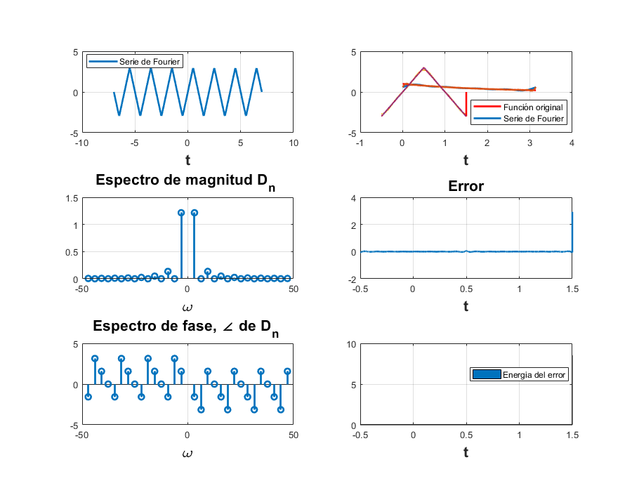

Práctica 5: Series de Fourier en tiempo continuo
Integrantes
- Alvarez Garcia Elian Alexander
- Diego Vertiz Alexis
- Marquina Zendejas Victor
- Mendivil Herrera Jesus Alejandro
UPIITA IPN Señales y Sistemas Grupo: 2TV1
Contents
Objetivos
- Realizar gráficas de series de Fourier exponenciales y trigonométricas en tiempo continuo
- Manipulación de instrucciones en MATLAB
- Calculo númerico de los coeficientes de Fourier
Introduccion
Problema 1 - Ejemplo 6.1
Para 4 armonicos
a0=0.504;
an=@(n) (2*0.504)/(1+(16*n*n));
bn=@(n) (8*0.504*n)/(1+(16*n*n));
t0=0;
tf=3.1416;
f=@(t) exp(-t/2);
armo=4;
a=-7;
b=7;
sft(t0,tf,an,bn,a0,f,armo,a,b)
hold off
 Para 15 armonicos
armo=15; sft(t0,tf,an,bn,a0,f,armo,a,b)
Problema 2 - Ejemplo 6.2
Para 4 armonicos
clear all d0=0; dn=@(n) (12/((n*pi).^2)).*abs(sin(n*pi/2)).*exp((-pi/2)*n*1i); t0=-0.5; tf=1.5; f=@(t) ((6*t).*(t>=-0.5 & t<0.5))+((6-6*t).*(t>=0.5 & t<1.5)); armo=4; a=-7; b=7; sfc(t0,tf,dn,d0,f,armo,a,b) hold off
Para 15 armonicos
armo=15; sfc(t0,tf,dn,d0,f,armo,a,b) clc
Problema 3 - Ejemplo 6.4
Problema 4 - Ejercicio 6.5
Para 4 armonicos
Para 15 armonicos